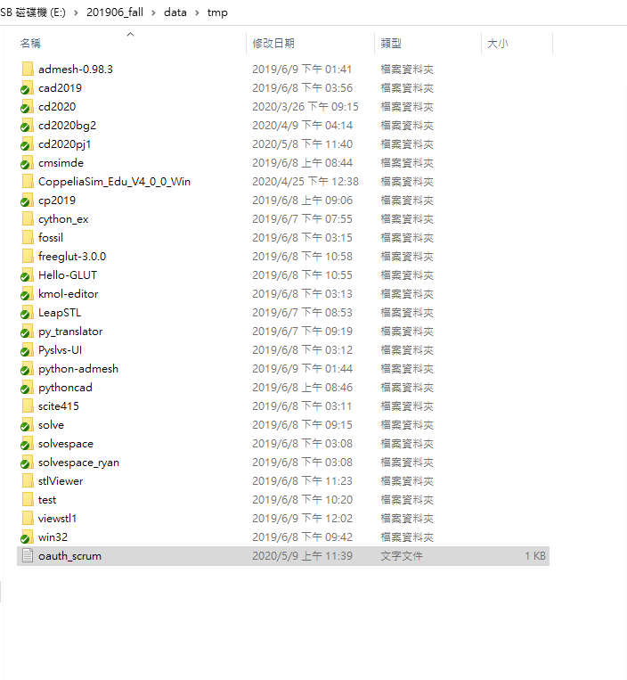
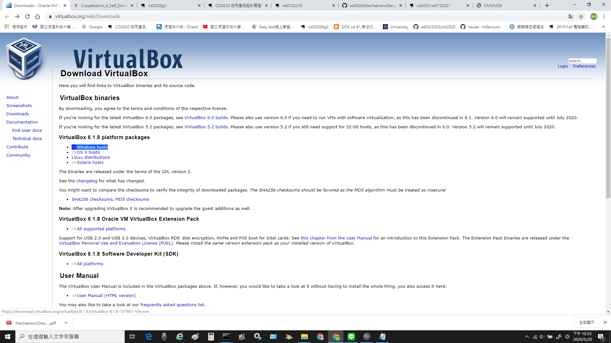
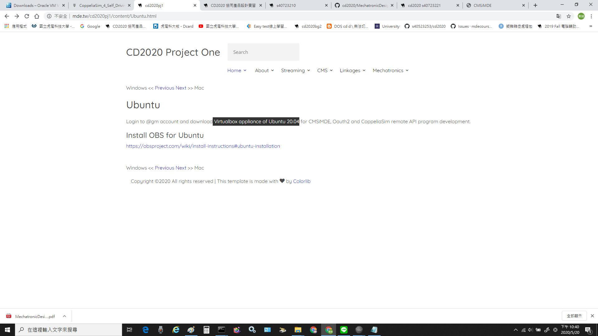
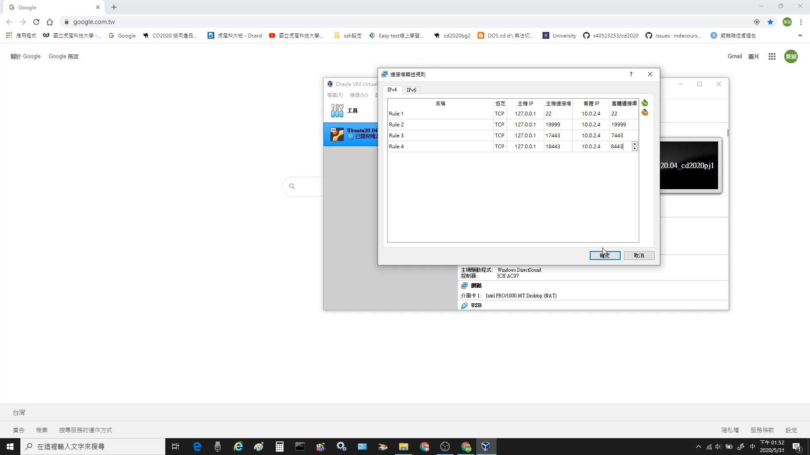
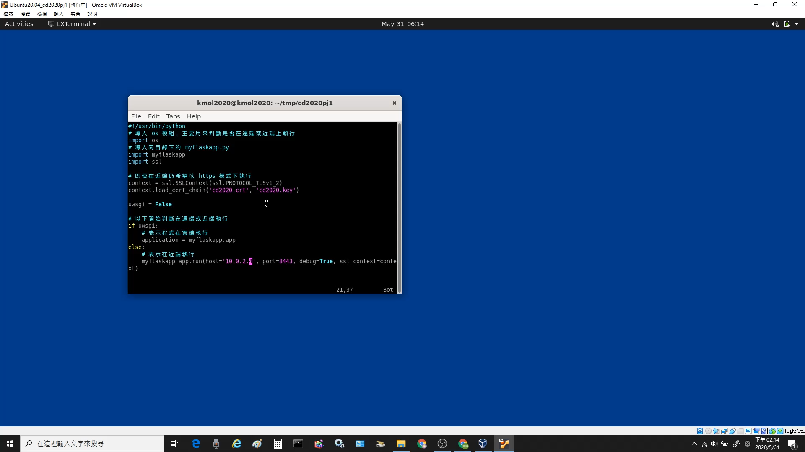
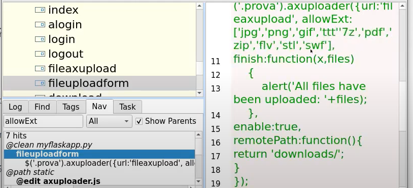
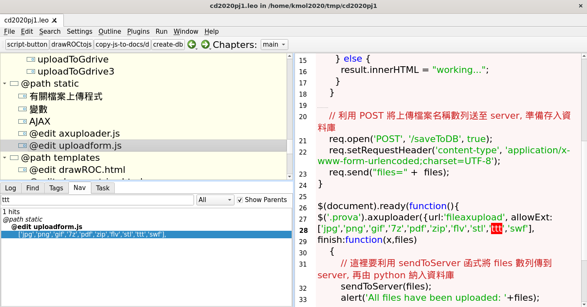

week6~9 <<
Previous Next >> W12-W18 assesment
week10~14
week10:
Use Google + Domain API to setup login for @gm.nfu.edu.tw users
1. 登陸自己學校給的google帳號
2. 連到 https://console.developers.google.com/
3. 接受許可並建立專案(專案自己取)
4. 啟用API和服務
5. 點選Google Domain API並啟用
6. 點選憑據>設定同意畫面 > User Type選內部 > 應用程式名稱自己取 > 按儲存
7. 在“API和服務”下，進入“憑據”頁面
8. 建立憑證 > 選OAuth 2.0 Client IDs > 選網路應用程式
9. 將用戶端ID密碼儲存在tmp下

10. 授權JavaScript 來源 : https://localhost:8443
授權的重定向URI : https://localhost:8443/login/google/
11. 開啟leo更改config中的scrum為自己存在tmp的用戶端ID密碼檔案名稱 > 按save和darwROC
12. 執行pip install authomatic
13. 開啟https://localhost:8443 並測試是否正常運作
week10開會紀錄 :
topic2 :
coppeliasim : 40723221
MSModelingAndTFApproaches.pdf. 207頁 : 7人
40723249
40623117
40723221
40723228
40723236
40723237
40723243
MechatronicDesignCases.pdf. 46頁 : 2人
40723222
40723244
topic3 :
MechaFutureAndChallenges.pdf. 38頁 : 2人
40623252
40523253
MechaEducFutureNeed.pdf. 20頁 : 1人
40723240
ubuntu-Vrep虛擬主機設置
1. 下載vitualbox、ubuntu、CoppeliaSim四輪車控制器
https://www.virtualbox.org/wiki/Downloads
點Windows hosts下載

CoppeliaSim_4_Self_Driving_Car_Simulation.7z

Virtualbox appliance of Ubuntu 20.04
2. 點喜好設定在網路那新增NAT網路
3. 匯入ubuntu
4. 設定網路選僅限主機介面卡
5. 啟動ubuntu
6. 輸入密碼kmol2020
7. 點activites -> 點show application -> 點LX terminal
8. 輸入xterm& -> 輸入ls顯示資料
9. 同時按ctrl+右鍵按著可以調整視窗的大小
10. 輸入cd coppeliasim4_rev4 進入該資料夾內
11. 輸入ls顯示資料 -> 再輸入cd CoppeliaSim_Edu_V4_0_0_ubuntu18_04
12. 輸入./coppeliaSim.sh 即可開啟Vrep虛擬主機
影片教學 :
week11:
week11開會直播影片紀錄 :
ubuntu-Vrep虛擬主機連線
前面跟上部影片步驟一樣
下載的CoppeliaSim_4_Self_Driving_Car_Simulation.7z
用編輯器開啟裡面的car_model.py -> tool -> go
成功時四輪車會繞圈，如下方影片
week12:
week12開會直播影片紀錄 :
ubnutu ipv4 對外連線
1. 新增埠號

2. 啟動後登入ubnutu
3. 開啟Lxterminal
4. 輸入ifconfig -> 輸入sudo apt install net-tools -> 密碼打kmol2020
5. 輸入ping 127.0.0.1測試
6. 輸入cd cd2020pj1以進入cd2020pj1資料夾中 -> git pull
7. 輸入sudo vi wsgi.py進入編輯
8. 按i編輯 -> 近端host改為10.0.2.4

9. 按下esc -> 輸入:wq 儲存修改的資料
10. 開啟leo -> 用nav找到allowext7檔案 -> 新增ttt檔
11. 到tmp下輸入 sudo vi oauth_scrum.txt
12. 內容依自己高興輸入 -> 輸入python3 wsgi.py
13. 進入https://127.0.0.1:18443/alogin 完成連線
week13:
week13開會直播影片紀錄 :
week14:
因為新版本找不到新增ttt檔位置，後來查出是位置不同
舊版位置 :

新版位置 :

week6~9 <<
Previous Next >> W12-W18 assesment